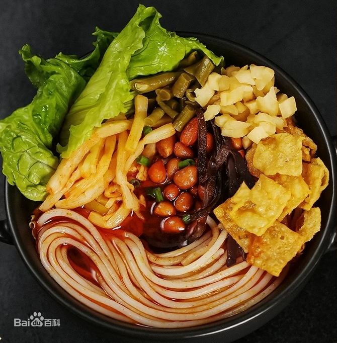
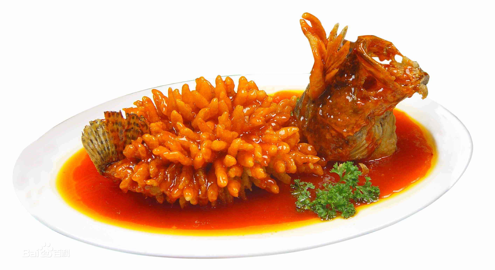
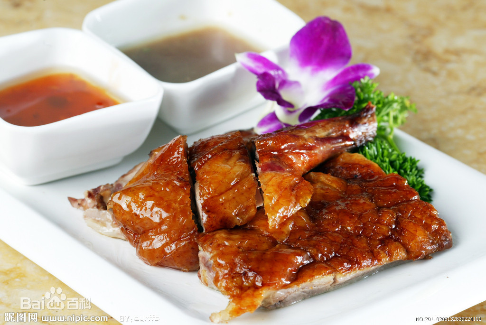

食物推荐


| 食物图片 | 食物介绍 |
|---|---|
|  | 螺蛳粉是广西壮族自治区柳州市的特色小吃之一，具有辣、爽、鲜、酸、烫的独特风味。是柳州最具地方特色的名小吃。螺蛳粉的味美还因为它有着独特的汤料。汤料由螺蛳、山奈、八角、肉桂、丁香、多种辣椒、等天然香料和味素配制而成。2018年8月20日，“柳州螺蛳粉”获得国家地理标志商标。2008年，柳州螺蛳粉手工制作技艺入选广西壮族自治区第二批非物质文化遗产名录。2015年，在《柳州螺蛳粉地方标准》、《预包装柳州螺蛳粉地方标准》的第三次修正稿中规定将螺蛳粉的官方英文名定为：“Liuzhou river snails rice noodle”。2019年3月21日，螺蛳粉发源地广西柳州官方表示，感谢海外友人的关心，螺蛳粉是广西非遗，正逐步申请国家和世界级非遗！ |
|  | 松鼠桂鱼，又名松鼠鳜鱼，是一道以鳜鱼（或桂鱼）为主要食材制作的苏帮菜中的传统名菜。2018年9月10日，“中国菜”正式发布，“松鼠鳜鱼“被评为江苏十大经典名菜。松鼠桂鱼的前身是松鼠鱼。清代《调鼎集》中有记载为：取鲔鱼肚皮，去骨，拖蛋黄炸黄，作松鼠式。油、酱油烧”。鯚鱼，即鳜鱼，也叫“鯚花鱼，南方人多称其为桂鱼，取蟾宫折挂之意。 |
|  | 烧鹅是广东省传统名肴，属粤菜系，是广州传统的烧烤肉食，烧鹅源于烧鸭。鹅以中、小个的清远黑棕鹅为优，去翼、脚、内脏的整鹅，吹气，涂五香料，缝肚，滚水烫皮，过冷水，糖水匀皮，晾风而后腌制，最后挂在烤炉里或明火上转动烤成，斩件上碟，便可进食。烧鹅色泽金红，味美可口。据载，历史最久的烧鹅是在广东新会的古井镇，距今有七百多年的历史，如今在该地仍然有坚持以“古井烧鹅”为品牌的食肆，很多都在标榜其出品为最正宗的烧鹅。在广东的“深井烧鹅”为食客所追捧，有一说法是指出名源于地名（深圳的深井、香港的深井、广州的深井），另一说法指源于烧鹅烧制的方法是采用陈旧的“深井”而得名。在广东的食肆中，运营粤菜的无不例外都有这道烧鹅菜式，技法上沿用传统的方式，他们或在炉具的选择上，或在烧鹅的辅料上有所区别，就构成了有着各式各样名称的“烧鹅”。 |